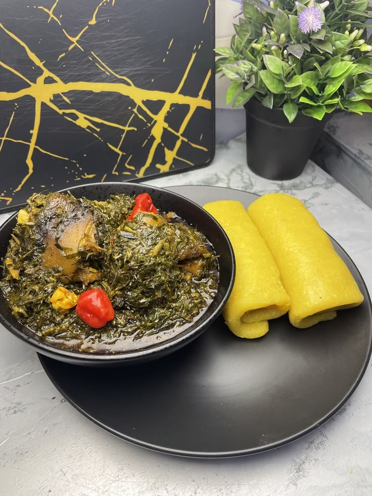

Authenticité
Mettre en lumière les saveurs, les ingrédients et les savoir-faire qui font la singularité des cuisines africaines.
L'ÂME DE MBOA KITCHEN · DEPUIS NOS RACINES
Derrière chaque plat, il y a une terre, une histoire, un savoir-faire et des souvenirs. Mboa Kitchen est une invitation à découvrir toute la richesse des cuisines africaines.
DÉCOUVRIR NOTRE UNIVERS ↗
BIEN PLUS QU'UN REPAS
La cuisine africaine ne se résume pas à des recettes. Elle porte la mémoire des familles, la diversité des régions et la créativité de générations entières.
Avec Mboa Kitchen, nous souhaitons mettre cette richesse en lumière et créer un espace où chacun peut explorer, apprendre, partager et célébrer les saveurs du continent.
« La gastronomie est aussi une façon de transmettre une culture. »
CE QUI NOUS ANIME
Derrière chaque découverte, une intention : faire vivre la richesse des cuisines africaines.
Mettre en lumière les saveurs, les ingrédients et les savoir-faire qui font la singularité des cuisines africaines.
Préserver les histoires culinaires et partager les connaissances qui passent de génération en génération.
Explorer les différentes régions, traditions et influences qui composent la richesse gastronomique du continent.
Faire de la cuisine un espace de rencontre, de découverte et de convivialité.
DERRIÈRE MBOA KITCHEN
À l'origine de ce projet, trois étudiantes réunies par l'envie de valoriser la richesse des cuisines africaines et de la faire découvrir autrement.
Membre de l'équipe Mboa Kitchen
Membre de l'équipe Mboa Kitchen
Membre de l'équipe Mboa Kitchen
ET SI ON PASSAIT À TABLE ?
Explorez nos recettes, découvrez des restaurants et partez à la rencontre des saveurs africaines.